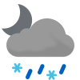

Weather
Germersheim 5.5-16.2
5.5-16.2

6.3-14.8 Sat

5.3-14.4 Sun

8.1-17.4 Mon

9.2-15.8 Tue

10.2-21.5 Wed

13.9-17.7 Thu

9.9-14.1 Fri

5.3-6.4 Sat

1.7-3.1 Sun
Erlabrunn 3.9-11.6
3.9-11.6

3.1-9.2 Sat

3.1-10.0 Sun

7.4-13.5 Mon

7.8-13.9 Tue

12.0-18.3 Wed

11.2-13.8 Thu

7.0-10.3 Fri

1.5-3.0 Sat

0.6-1.2 Sun
Schmilka 5.2-16.0
5.2-16.0

4.4-11.8 Sat

2.8-12.5 Sun

6.9-16.4 Mon

7.8-16.0 Tue

12.6-20.0 Wed

13.0-18.1 Thu

9.6-14.4 Fri

4.0-8.2 Sat

3.7-4.5 Sun